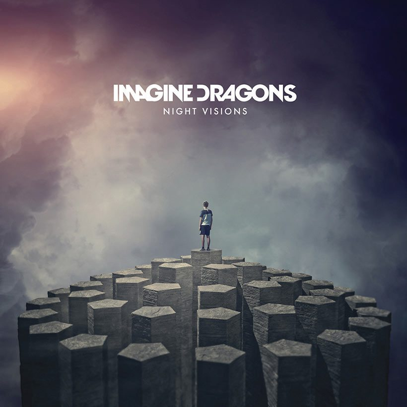

Imagine Dragons
Group Members
- Dan Reynolds
- Wayne Sermon
- ben McKee
Imagine Dragons Website
My top 3 albums:
- Night Visions (2012)
- Debut album that catapulted Imagine Dragons to global fame.
- Blends indie rock, pop, and electronic influences.
- Features massive hits like "Radioactive", "Demons", and "It's Time".
- Evolve (2017)
- Third studio album, marking a shift to a more pop-centric, synth-heavy sound.
- Includes hits like "Believer", "Thunder", and "Whatever It Takes".
- Smoke + Mirrors (2015)
- Sophomore album with a darker, more experimental tone.
- Includes tracks like "Shots", "I Bet My Life", and "Gold".